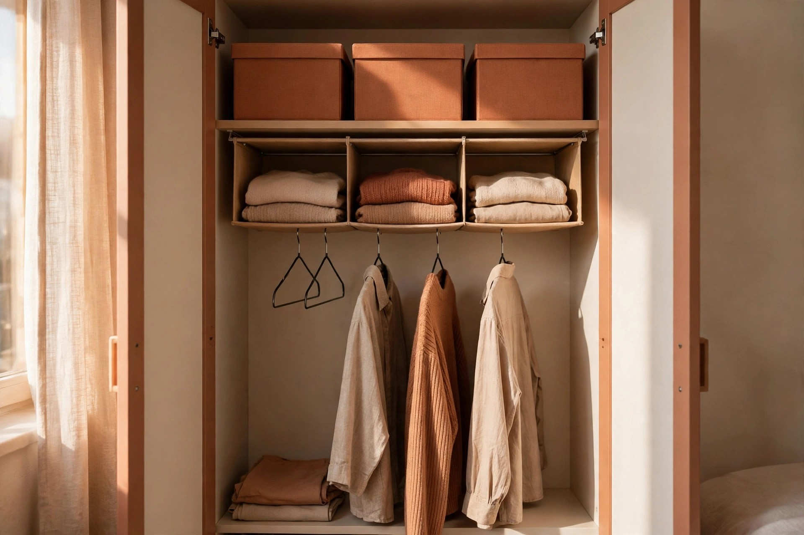

Small Bedroom
Small Bedroom Wardrobe Organisation Ideas Under $50
Intro
A small wardrobe is not a small problem — it is the reason clothes end up on the chair, the floor and the bed. The fix is not a bigger wardrobe; it is making the one you have work harder. Slim hangers, hanging shelves, boxes and a capsule layout can double what fits inside.
This guide has 12 wardrobe organisation ideas, all under $50 in total. Each idea lists what it holds and what it costs, and most of them take under 20 minutes to set up.

Start by taking everything out of the wardrobe and sorting it on the bed. It feels like a mess for ten minutes, but it is the only way to see what you actually own — most people find clothes they forgot they had, and a few things they never wear. Put back only what fits, what you wear, and what belongs to this season; the rest goes in a box under the bed or to donate.
1. Slim velvet hangers — $8–$12 for 20
Slim hangers are half the thickness of wooden ones, so 20 shirts take up the space of 10. The velvet stops clothes sliding off. This one change frees about 15 cm of rail space — enough for 5 more shirts.
2. A hanging fabric shelf — $8–$12
A hanging shelf with 4–6 compartments hangs from the rail and divides the wardrobe vertically. T-shirts, jeans and jumpers go in the compartments instead of piling up. It almost doubles the usable space of one shelf.
3. Shelf dividers — $5–$8
Clear acrylic dividers stand on a shelf and stop stacks of clothes falling over. One divider per stack, and you can pull out one T-shirt without the whole pile collapsing. They cost about $2 each.
4. A second rail, lower down — $10–$15
A tension rod or a short rail hung halfway down doubles the hanging space for shirts and blouses. Hang shirts on the top rail and trousers on the bottom one. It works best in wardrobes taller than 1.8 metres.
5. Matching boxes on the top shelf — $8–$12
Matching boxes or baskets on the top shelf hold out-of-season clothes, scarves and hats. Matching boxes look tidy; mixed boxes look like storage. Label each box so you do not have to open all of them to find one scarf.
6. A capsule layout: 30 pieces — $0
Pick 30 pieces for the season — tops, bottoms, one jacket, two pairs of shoes — and store the rest. A capsule wardrobe means less to organise, faster mornings, and a wardrobe that is never overstuffed. The other clothes go in a box under the bed.
7. Hanging shoe organiser on the door — $8–$12
A shoe organiser with clear pockets hangs on the inside of the wardrobe door. It holds shoes, but also scarves, belts, socks and underwear. The door is empty space — use it.
8. Belt and scarf hooks inside the door — $5–$8
Two or three adhesive hooks inside the wardrobe door hold belts, scarves and necklaces. They take no shelf space, and everything is visible when you open the door. Keep the hooks shallow so the door still closes.
9. Vacuum bags for out-of-season clothes — $8–$12
Heavy winter jumpers and coats go in vacuum bags, which shrink them to half their size. Store the bags on the top shelf or under the bed. The clothes stay clean and dust-free, and the wardrobe breathes again.
10. One basket for laundry, one for clean — $6–$10
Two small baskets on the wardrobe floor: one for clothes to wash, one for clean clothes waiting to be put away. It stops the chair pile — the chair is not a wardrobe, and two baskets cost less than one new piece of furniture.
11. Colour order on the rail — $0
Hang clothes in colour order: white, beige, blue, black. It costs nothing, it makes the wardrobe look calm, and you find things faster. It also shows you at a glance which colours you have too many of.
12. The one-in-one-out rule — $0
When a new piece of clothing comes in, an old one goes out — to donate, to sell, or to the bin. A small wardrobe only works if the number of clothes stays the same. This habit is free and it is the only idea on this list that works forever.
Conclusion
Wardrobe organisation is mostly about hangers, shelves and habits. Slim hangers and a hanging shelf cost about $20 and double the space; the capsule layout and the one-in-one-out rule cost nothing and keep it that way. Spend the $50 once, then let the habits do the work.
Budget recap
- Slim hangers (20): ~$10
- Hanging fabric shelf: ~$10
- Shoe organiser: ~$10
- Vacuum bags: ~$10
- Shelf dividers: ~$6
- **Total: ~$46 — a wardrobe that holds twice as much.**
Pinterest pin titles (3 fresh pins, same article, different designs)
- ""Small Bedroom Wardrobe Organisation Ideas Under $50""
- ""Double Your Wardrobe Space for $46 — 12 Ideas""
- ""Small Wardrobe? 12 Organisation Ideas That Actually Work""